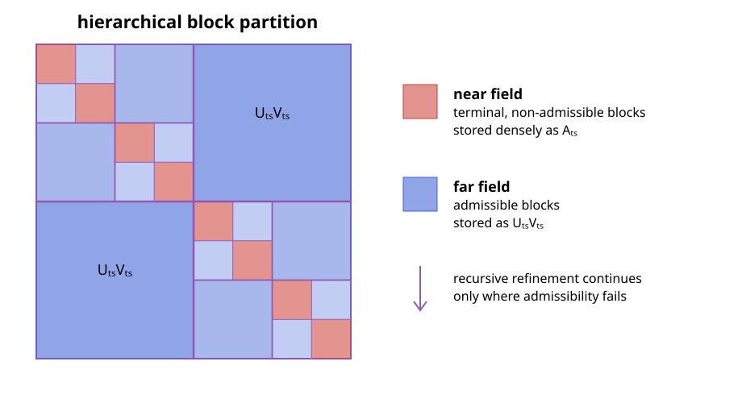

Hierarchical Matrices
A hierarchical matrix, or $\mathcal{H}$-matrix, represents a dense matrix by a hierarchy of small dense near-field blocks and low-rank far-field blocks. For matrices arising from integral equations, this reflects the different behavior of the kernel at short and long distances: nearby interactions may be singular or rapidly varying, whereas well-separated interactions are usually smooth and compressible [1, 3, 6].
Cluster Trees and Block Trees
Let
\[\boldsymbol{\mathsf A}\in\mathbb{K}^{M\times N}, \qquad \mathcal I=\{1,\ldots,M\}, \quad \mathcal J=\{1,\ldots,N\}.\]
A cluster tree $\mathcal T_{\mathcal I}$ recursively partitions the row-index set. Its root is $\mathcal I$, and the children of every non-leaf cluster $t$ form a disjoint partition of $t$. A second tree $\mathcal T_{\mathcal J}$ organizes the column indices in the same way. Each cluster is associated with a geometrical support $\Omega_t$ containing the positions of its degrees of freedom.
The Cartesian product of the two cluster trees defines a block tree. A block $b=t\times s$ represents the submatrix
\[\boldsymbol{\mathsf A}_{ts} =\boldsymbol{\mathsf A}[t,s] \in\mathbb{K}^{|t|\times|s|}.\]
Starting with $\mathcal I\times\mathcal J$, the block tree recursively subdivides cluster pairs until they are either geometrically admissible or cannot be refined further. Its leaves form a disjoint matrix partition
\[\mathcal P =\mathcal P_{\mathrm{near}}\mathbin{\dot\cup} \mathcal P_{\mathrm{far}}.\]
Geometric Admissibility
A strong admissibility condition declares $t\times s$ a far-field block when
\[\max\!\left( \operatorname{diam}(\Omega_t), \operatorname{diam}(\Omega_s) \right) \leq \eta\,\operatorname{dist}(\Omega_t,\Omega_s).\]
The condition compares the size of both clusters with their separation. In the H2Trees backend, the supports are bounding balls or boxes, and the distance is the gap between them. With the convention above, increasing $\eta$ makes the test easier to satisfy: more blocks enter the far field, including less strongly separated interactions that may require a larger numerical rank.
If a pair is not admissible, it is subdivided. A non-admissible pair that reaches a terminal cluster becomes a near-field block and is stored densely. The resulting recursive structure is illustrated below; the exact pattern depends on the geometry rather than only on the matrix indices.

Blockwise Low-Rank Approximation
For a block partition $\mathcal P$ and maximum far-field rank $k$, the associated hierarchical matrix class is
\[\mathcal H(\mathcal P,k) = \left\{ \boldsymbol{\mathsf M}\in\mathbb{K}^{M\times N}: \operatorname{rank}(\boldsymbol{\mathsf M}[t,s])\leq k \ \text{for all}\ t\times s\in\mathcal P_{\mathrm{far}} \right\}.\]
No rank restriction is imposed on the near-field blocks [1]. For every far-field block $t\times s\in\mathcal P_{\mathrm{far}}$, seek factors
\[\boldsymbol{\mathsf A}_{ts} \approx \widetilde{\boldsymbol{\mathsf A}}_{ts} = \boldsymbol{\mathsf U}_{ts}\boldsymbol{\mathsf V}_{ts},\]
where
\[\boldsymbol{\mathsf U}_{ts}\in\mathbb{K}^{|t|\times k_{ts}}, \qquad \boldsymbol{\mathsf V}_{ts}\in\mathbb{K}^{k_{ts}\times|s|}, \qquad k_{ts}\ll\min(|t|,|s|).\]
Near-field blocks are retained without compression. The complete approximation is therefore defined blockwise by
\[\widetilde{\boldsymbol{\mathsf A}}[t,s] = \begin{cases} \boldsymbol{\mathsf A}_{ts}, &t\times s\in\mathcal P_{\mathrm{near}},\\[2mm] \boldsymbol{\mathsf U}_{ts}\boldsymbol{\mathsf V}_{ts}, &t\times s\in\mathcal P_{\mathrm{far}}. \end{cases}\]
An $\mathcal H$-matrix stores independent factors for its admissible blocks; a cluster appearing in several blocks does not share a basis between them.
Construction with ACA
ACA constructs $\boldsymbol{\mathsf U}_{ts}$ and $\boldsymbol{\mathsf V}_{ts}$ from selected rows and columns of each far-field block. It does not first assemble the dense matrix $\boldsymbol{\mathsf A}_{ts}$ [1, 3]. For a block of size $m_t\times n_s$ compressed to rank $k_{ts}$, the factors contain
\[k_{ts}(m_t+n_s)\]
scalars. Partial-pivoted ACA evaluates the same order of matrix entries and needs $\mathcal O(k_{ts}^2(m_t+n_s))$ arithmetic operations. This on-demand access is especially important in boundary-element methods, where a single matrix entry may itself require numerical quadrature.
The dense near field and the compressed far field are assembled independently:
row and column cluster trees
│
▼
block-tree traversal
│
admissibility test
┌─────┴─────┐
▼ ▼
terminal near admissible far
dense assembly ACA compression
└─────┬─────┘
▼
H-matrix operatorIntegral-Equation Matrices
After a boundary-element or method-of-moments discretization, an integral operator produces a dense system matrix with entries of the form
\[A_{ij}=a(\boldsymbol\beta_i,\boldsymbol\alpha_j),\]
where $\boldsymbol\beta_i$ and $\boldsymbol\alpha_j$ are testing and basis functions. Geometric separation removes the kernel singularity from far-field blocks and makes their interactions amenable to low-rank approximation. This is the setting in which ACA replaces the quadratic storage and application cost of a dense method-of-moments matrix [3].
Admissibility alone does not guarantee that a particular ACA pivot sequence detects the numerical rank reliably. Double-layer operators, including the magnetic-field integral operator, can contain separated algebraic structures that partial pivoting does not visit before the standard convergence estimate becomes small [6]. Such blocks remain geometrically compressible, but require the combined maximum-value/random-sampling strategy described in Robust ACA for Integral Equations. Thus, geometric admissibility and algebraic pivot reliability address different parts of the construction.
Storage and Matrix-Vector Products
Ignoring index and object overhead, the number of stored scalars is
\[N_{\mathrm{storage}} = \sum_{t\times s\in\mathcal P_{\mathrm{near}}}|t|\,|s| + \sum_{t\times s\in\mathcal P_{\mathrm{far}}} k_{ts}(|t|+|s|).\]
The same expression describes the leading work of a matrix-vector product. A dense near-field block contributes $\boldsymbol{\mathsf A}_{ts}\boldsymbol x_s$, whereas a far-field block is applied as
\[\boldsymbol{\mathsf U}_{ts} \left(\boldsymbol{\mathsf V}_{ts}\boldsymbol x_s\right).\]
The inner product first reduces $\boldsymbol x_s$ to $k_{ts}$ coefficients, and the outer product maps them to the row cluster. Neither the dense far-field block nor the complete dense matrix is formed.
Accuracy
Because the leaf blocks form a disjoint partition and the near field is assembled exactly with respect to the chosen quadrature,
\[\left\lVert \boldsymbol{\mathsf A}-\widetilde{\boldsymbol{\mathsf A}} \right\rVert_{\mathrm F}^2 = \sum_{t\times s\in\mathcal P_{\mathrm{far}}} \left\lVert \boldsymbol{\mathsf A}_{ts} -\boldsymbol{\mathsf U}_{ts}\boldsymbol{\mathsf V}_{ts} \right\rVert_{\mathrm F}^2.\]
If every far-field block satisfied the exact relative condition
\[\left\lVert \boldsymbol{\mathsf A}_{ts} -\boldsymbol{\mathsf U}_{ts}\boldsymbol{\mathsf V}_{ts} \right\rVert_{\mathrm F} \leq \varepsilon \lVert\boldsymbol{\mathsf A}_{ts}\rVert_{\mathrm F},\]
then the global Frobenius error would obey the same relative bound. In practice, ACA uses an estimated convergence criterion, so the requested tolerance is not an a priori error guarantee. Pivoting, random sampling, admissibility, and the maximum rank all influence the attained error. Quadrature and discretization errors are separate from the $\mathcal H$-matrix compression error.
Complexity and the Relation to H2-Matrices
For balanced cluster trees, bounded far-field rank $k$, bounded near-field connectivity, and a uniformly sparse block tree, the storage and matrix-vector cost are
\[\mathcal O(kN\log N),\]
instead of $\mathcal O(N^2)$ for a dense matrix [1, 3]. The logarithm arises because an ordinary $\mathcal H$-matrix stores separate block bases across the levels of the tree. A stricter separation requirement usually lowers the ranks but leaves more dense near-field interactions; a more permissive requirement does the reverse.
An $\mathcal H^2$-matrix replaces the independent block bases by nested bases shared by all interactions of a cluster. Under fixed-rank assumptions this removes the logarithmic factor and gives $\mathcal O(kN)$ storage and application cost [5, 7]. The incomplete ACA develops the pivot sets needed for that nested construction; see Incomplete Adaptive Cross Approximation.
The stated bounds rely on bounded ranks and regular tree geometry. High-frequency problems, strongly nonuniform meshes, or unsuitable admissibility parameters can make the ranks or the number of blocks grow and must be analyzed separately.
For constructors, point-kernel examples, tree backends, and matrix operations, see Using Hierarchical Matrices.